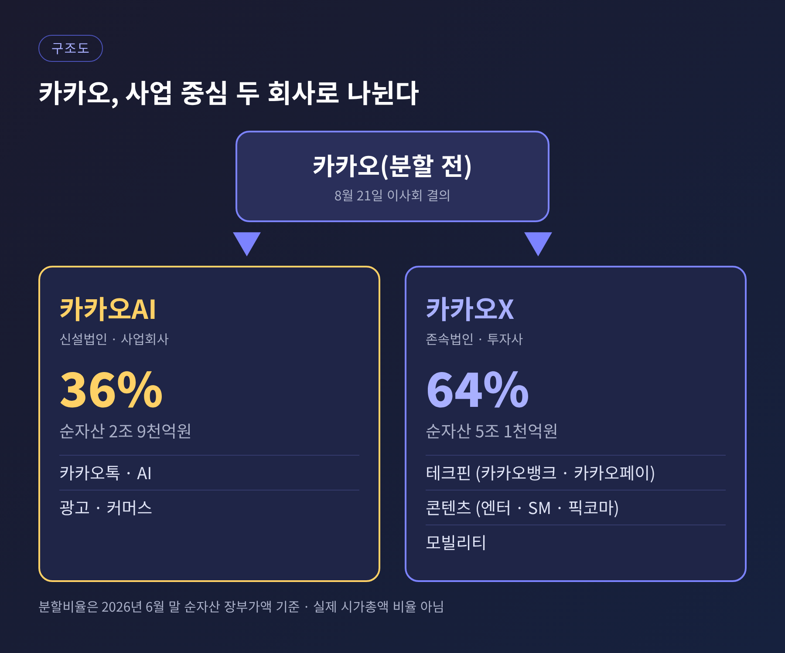
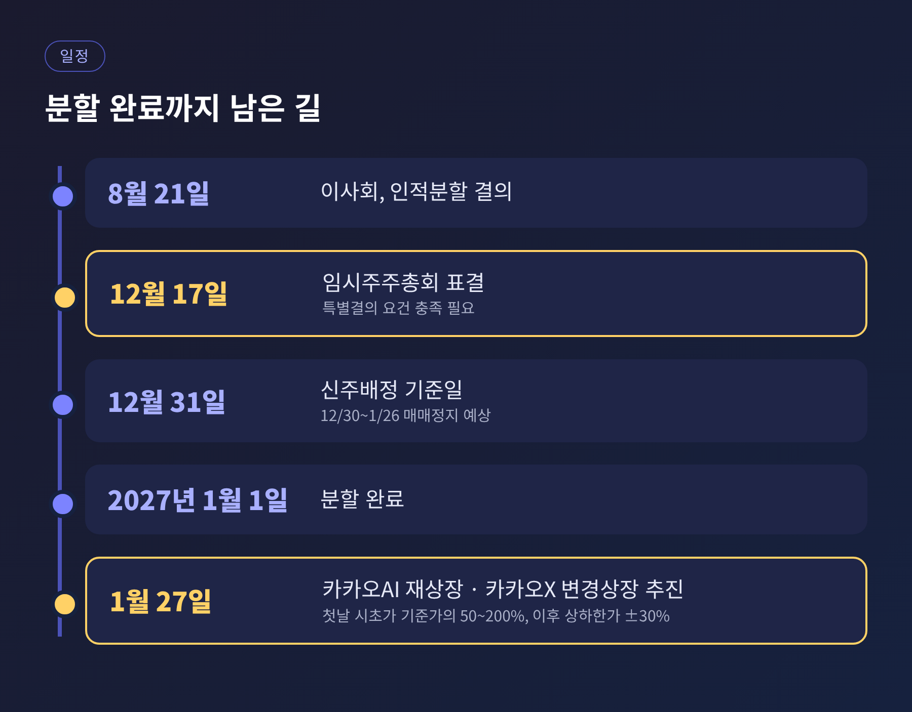
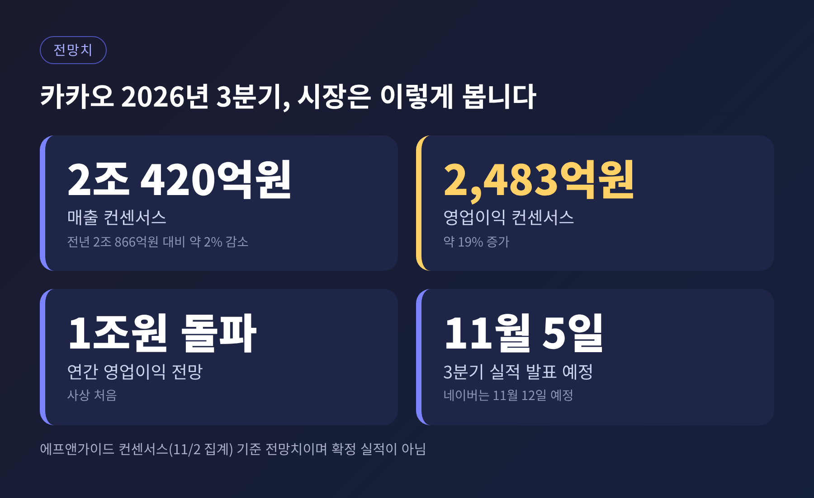
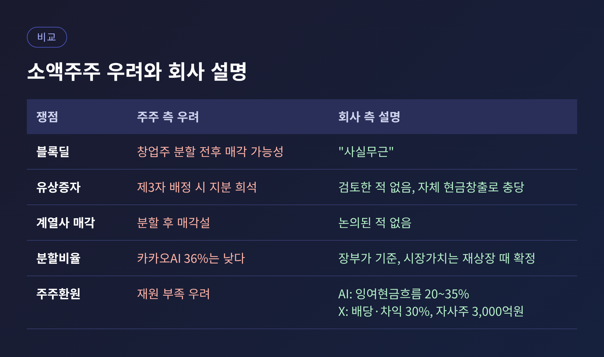
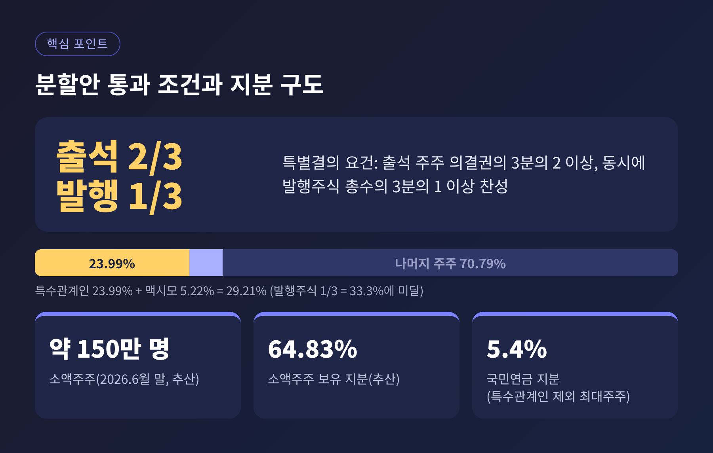

카카오 인적분할 12월 17일 표결, 3분기 실적 앞두고 짚는 쟁점

3줄 요약
- 카카오는 12월 17일 임시주주총회에서 인적분할(카카오AI·카카오X) 안건을 표결에 부칩니다.
- 카카오의 3분기 실적 발표는 5일로 예정돼 있고, 시장은 매출 2% 감소·영업이익 19% 증가를 예상합니다.
- 분할의 성패는 실적보다 AI 사업의 성과 입증과 주주 설득에 달려 있습니다.
오늘은 카카오 인적분할을 두고 시장이 무엇을 보고 있는지 정리해 보려 합니다.
3분기 실적 발표를 하루 앞둔 시점이라, 실적 전망과 분할 일정을 함께 묶어 살펴봅니다.
네이버·카카오 3분기 실적은 아직 발표 전이어서, 이 글의 실적 수치는 모두 증권가 전망치입니다.
무슨 일이 있었나: 카카오가 둘로 나뉩니다
카카오는 8월 21일 이사회에서 인적분할을 결의했습니다.
카카오톡·AI·광고·커머스를 맡는 신설법인 '카카오AI'와, 자회사 관리와 투자를 맡는 존속법인 '카카오X'로 나누는 안입니다.
카카오X 아래에는 카카오뱅크·카카오페이 같은 테크핀, 카카오엔터테인먼트·SM엔터테인먼트 같은 콘텐츠, 카카오모빌리티가 묶입니다.
카카오톡 중심의 AI 사업과 덩치 큰 계열사 포트폴리오를 따로 평가받게 하겠다는 구상입니다.
분할비율은 카카오X 64%, 카카오AI 36%입니다.
2026년 6월 말 순자산 장부가액을 기준으로 계산했고, 순자산은 카카오X 5조 1천억원, 카카오AI 2조 9천억원입니다.
카카오는 이 숫자가 실제 시가총액 비율은 아니라고 설명합니다.

왜 지금 중요한가: 표결 일정이 정해졌습니다
일정은 촘촘합니다.
12월 17일 임시주총에서 승인되면 2027년 1월 1일 분할이 완료되고, 1월 27일 카카오AI 재상장과 카카오X 변경상장이 추진됩니다.
12월 30일부터 1월 26일까지는 매매가 정지될 것으로 예상됩니다.
재상장 첫날 시초가는 기준가의 50~200% 범위에서 정해지고, 이후 상·하한가는 ±30%입니다.
분할 직후 두 회사의 가치가 하루 만에 시장에서 확정되는 구조인 셈입니다.

여기에 3분기 실적이 겹칩니다.
에프앤가이드 컨센서스 기준으로 카카오의 3분기 매출은 2조 420억원으로 전년보다 약 2% 줄고, 영업이익은 2,483억원으로 약 19% 늘 전망입니다.
광고·커머스가 추석 연휴 영향을 받고 웹툰·뮤직이 부진한 반면, 계열사 정리와 비용 효율화가 이익을 받치는 그림입니다.
계열사는 2023년 5월 147곳에서 2026년 8월 86곳으로 줄었습니다.
연간 영업이익이 처음으로 1조원을 넘을 것이라는 전망도 나옵니다.
다만 한국투자증권은 3분기 영업이익을 2,246억원으로 더 낮게 추정했습니다.

배경과 쟁점 1: 주주를 어떻게 설득하는가
분할 발표 이후 주가는 눈에 띄게 내려갔습니다.
공시 직전 거래일인 8월 20일 38,700원이던 주가는 9월 28일 34,250원으로 11.5% 낮아졌고, 10월 20일 종가는 31,350원이었습니다.
소액주주가 던진 질문은 비교적 분명합니다.
분할하지 않고도 AI 사업을 강화할 수 있지 않느냐는 것, 합산 시가총액이 오히려 줄지 않겠느냐는 것입니다.
김범수 창업주의 블록딜과 제3자 배정 유상증자 가능성, 카카오AI의 분할비율이 낮다는 점도 거론됐습니다.
회사는 하나씩 답했습니다.
신종환 CFO는 블록딜을 "사실무근"이라고 했고, 유상증자도 검토한 적이 없다고 했습니다.
계열사 매각설도 논의된 적이 없다는 입장입니다.
사측은 국내 인적분할 6건을 분석하니 합산 시가총액이 평균 32% 늘었다고 설명하지만, 이는 회사 측 분석입니다.
주주환원 계획도 내놨습니다.
카카오AI는 조정 잉여현금흐름의 20~35%를 환원하고, 흐름이 전년 대비 50% 넘게 늘면 최대 40%까지 높입니다.
카카오X는 자회사 배당과 투자 차익의 각 30%를 재원으로 삼고, 분할 후 3년간 3,000억원 규모의 자사주를 사들여 소각합니다.

배경과 쟁점 2: 표결 요건과 노조 반대
인적분할은 주총 특별결의 사항입니다.
출석 주주 의결권의 3분의 2 이상, 그리고 발행주식 총수의 3분의 1 이상이 찬성해야 합니다.
한국경제TV 보도에 따르면 특수관계인 지분은 23.99%이고, 텐센트 계열 맥시모의 5.22%를 더해도 29.21%입니다.
발행주식의 3분의 1에는 못 미치는 숫자입니다.
소액주주가 약 150만 명, 지분 64.83%(추산)에 이르는 만큼, 일반 주주의 표심이 결과를 좌우할 수 있습니다.
노조의 반대도 분명합니다.
카카오 노조는 8월 26일 판교역 광장에서 분할 반대를 선포하고 12월 부결을 목표로 내걸었습니다.
국민연금에는 면담을 공식 요청했는데, 국민연금은 특수관계인을 뺀 최대주주로 지분 5.4%를 보유한 것으로 전해집니다.
노조는 분할 취지보다 책임과 고용 문제를 앞세우며 "회사를 쪼갤 수는 있어도 책임을 쪼갤 수 없다"고 주장합니다.

남은 과제: 계열사 지원과 현금의 성격
살펴볼 대목이 두 가지 더 있습니다.
하나는 카카오AI가 가져가는 현금입니다.
기존 카카오의 현금 약 2조 3천억원이 카카오AI로 넘어가는데, 이 중 약 1조 8,500억원은 커머스 고객 예수금입니다.
카카오AI 부채 약 3조원 중 2조원도 선불금·미지급금 같은 영업성 부채입니다.
이자 부담이 있는 차입금은 사실상 없다는 것이 회사 설명이지만, 자유롭게 쓸 수 있는 현금과는 구분해서 볼 필요가 있습니다.
다른 하나는 카카오X의 재원 배분입니다.
최근 5년간 이사회 비경상 안건 27건 중 23건이 자회사 관련이었습니다.
분할 후 카카오X가 계열사 지원과 신규 투자, 주주환원 사이에서 재원을 어떻게 나눌지가 관건입니다.
전망: 실적보다 '성과 입증'이 먼저입니다
카카오AI는 2030년 매출 6조원을 목표로 합니다.
광고 3조원, 커머스 2조원에 AI 관련 사업을 더한 숫자이고, 검색 영역을 '서치 에이전트'로 공략하겠다는 계획입니다.
정신아 대표는 카카오톡을 "통합 에이전틱 AI 인터페이스"로 키우겠다고 밝혔습니다.
증권가의 시선은 신중합니다.
한국투자증권은 카카오AI의 매력도를 카카오X보다 높게 보면서도, 분할 자체가 기업가치 상승을 보장하지는 않는다고 단서를 달았습니다.
KB증권은 분할 여부와 무관하게 시장이 인정할 AI 서비스와 성과부터 보여야 한다고 평가했습니다.
참고로 네이버는 12일 3분기 실적 발표가 예정돼 있습니다.
컨센서스는 매출 3조 5천억원대로 12% 늘지만 영업이익은 약 5천억원 안팎으로 줄어드는 그림입니다.
같은 AI 시대에도 네이버는 투자 비용으로, 카카오는 구조조정과 분할로 서로 다른 길을 걷고 있는 셈입니다.
정리하면 이렇습니다.
5일의 실적은 분할을 판단하는 하나의 참고 자료일 뿐이고, 표결의 향방은 AI 성과와 주주 신뢰에 더 크게 좌우될 것입니다.
"쪼개는 일보다 어려운 것은, 쪼갠 뒤에 무엇을 보여주느냐다."
12월 17일 표결에서 주주들이 어떤 답을 내놓을지 지켜볼 일입니다.
※ 이 글은 공개된 보도를 정리한 정보 제공용 해설이며, 특정 종목의 매수·매도를 권유하지 않습니다. 실적 수치는 확정치가 아닌 증권가 전망치입니다.
참고 출처: ZDNet Korea(2026-11-02), 테크M(2026-11-02), 빅데이터뉴스(2026-10-29), 딜사이트(2026-10-20), 아이뉴스24(2026-09-20, 2026-10-20), 연합뉴스(2026-10-20), 헤럴드경제(2026-10-14), IB토마토(2026-10-12), 한국경제TV(2026-09-28), 파이낸셜뉴스(2026-09-22), 뉴스핌·데일리안(2026-08-26), 토요경제(2026-10-21)